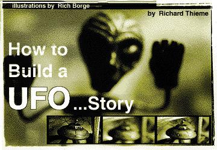
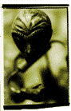
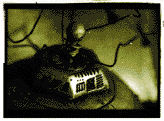

That "interview with a real X-Filer" can be found on one of the
hundreds of Web sites--in addition to Usenet groups, gopher holes
stuffed with hundreds of files and clandestine BBSs where abductees
meet to compare "scoop marks"--that make up the
virtual world of flying saucers.
When Don Schmitt uses the word "Roswell," he is not merely
identifying a small town in New Mexico that put itself on the tourist
map with a terrific UFO story. He uses it to mean the whole
story--the one that says a UFO crashed in 1947 near the Roswell
Army Air Field, after which alien bodies were recovered, eye-
witnesses were rewarded with new pick-up trucks or threatened with
death, and a cosmic Watergate--as Stanton Friedman, another
Roswell author, calls it--was initiated. Schmitt uses the word
"Roswell" the way Christian evangelists use "Jesus," to mean
everything believed about "Roswell." Like an evangelist, he counts on
his audience to fill in the details. Every good Roswellite knows them--
it's the story, after all, that defines them as a community.
Memes are contagious ideas that replicate like viruses from mind
to mind. The Internet is like a Petri dish in which memes multiply
rapidly. Fed by fascination, incubated in the feverish excitement of
devotees transmitting stories of cosmic significance, the UFO meme
mutates into new forms, some of them wondrous and strange.
The Internet represents information through symbols or icons. So
does speech, writing and printed text, but the symbols on the Net are
even further removed from the events and context to which they
point.
Certain phenomena, including UFOs and religious symbols, elicit
powerful projections. We think we're seeing "out there" what is really
inside us. Because projections are unconscious, we don't know if
we're looking at iron filings obscuring a magnet or the magnet itself.
Everything.
The way sites are connected on the WWW tends to obliterate our
historical sense. Everything on the Web seems to be happening
NOW. Without a point of reference, all information seems equal.
Lining up texts side-by-side and evaluating discrepancies feels like
hard work.
According to Jung, when the
psyche projects its contents onto an archetypal symbol, there is
always secrecy, fascination and high energy. When a Webmaster
finds an article like Sender's, he gets excited, plucks it out of
cyberspace and puts it on his site. Come across it four or five times,
and you start to believe it.
Karl Pflock is another "Roswell investigator." Stick his name into
a search engine and you'll find him
on the UFOlogist roster at Glenn Campbell's Area 51 Web site. The
text of an online interview with Pflock and Stanton Friedman is
reproduced there.
The UFO game needs teams so the game can be played. The "for-
team" and the "against-team" are essential to each other. The
famous "alien autopsy film" exploited by Ray Santilli illustrates this.
The Santilli film could be dismissed as a non-event, did it not
reveal a deeper dimension of life in the UFO world. What were its
effects?
Now we're closing in on the Snark.
There you have it. Without corroboration or external evidence to
use as a triangulating point, that's as far as the Internet can take us.
Words originate with someone--but who? Is the name on the e-
mail real? Is the domain name real? Is the account real?
What does it look like?
The UFO subculture or--for some--the UFO religion on the Internet
is a huge supermarket of images and words. Everything is for sale--
stories and pictures, membership in a community, entire belief
systems. But what are we buying? The meal? Or the menu?
THE BRICKS THAT BUILD THE HOUSE
That story is scattered on the Internet like fragments of an
exploding spaceship. Do the pieces fit together to make a coherent
puzzle? Or is something wrong with this picture?
STALKING THE UFO
MEME ON THE INTERNET
"The Roswell incident" is but one variation of the UFO meme. On
the Internet, Schmitt's words are hyperlinked to those of other UFO
sleuths and legions of interested bystanders like myself, as
fascinated by the psychodynamics of the subculture as by the "data"
exchanged as currency in that marketplace.
Before we examine a few fragments, let's pause to remember what
the Internet really IS.
COPIES OF COPIES --
OR COPIES OF ORIGINALS?
The power of speech gave us the ability to lie, and then writing hid
the liar from view. That's why Plato fulminated at writing--you couldn't
know what was true if you didn't have the person right there in front
of you, the dialog providing a necessary check.
The printing press made it worse by distancing reader and writer
even more. Now we put digital images and text on the Net. Pixels
can be manipulated. Without correlation with other data, no digital
photo or document can be taken at face value. There's no way to
know if we're looking at a copy of an original, a copy of a copy or a
copy that has no original.
But wait. It gets worse.
THE WORLD IS
A BLANK SCREEN
Carl Jung said UFOs invite projections because they're mandalas--
archetypal images of our deep selves. Unless we separate what we
think we see from what we see, we're bound to be confused.
Repetition makes any statement seem true. Hundreds of cross-
referenced links on the Web create a matrix of even greater
credibility. In print, we document assertions with references.
Footnotes are conspicuous by their absence on the
Web. Information is self-referential. Symbols and images point to
themselves like a 10-dimensional dog chasing its own tails.
"Roswell" may be the name of the game, but what does the name
really say?
WHAT'S IN A NAME?
Names reveal our beliefs about things.
Was there a "Roswell incident?" Or was there a "so-called Roswell
incident?"
Are Don Schmitt and his former partner Kevin Randle "the only two
professional investigators in the field" as Schmitt claims in that
interview? Or are they in fact "self-styled professional UFO
investigators?" (UFO investigators accredit themselves, then
reinforce their authority by debating one another and showing up at
the same forums. Refuting or attacking another "investigator" does
him a favor by acknowledging his importance).
Are there "eight firsthand witnesses who saw the bodies,"
"many high-ranking military officials who said it was not of this Earth"
or "550 witnesses stating that this was not from this earth?" All of
those statements are made in the same interview.
Words like "self-styled" and "alleged" do more than avoid lawsuits.
They make clear that the speaker states or believes something rather
than knows it to be true. Schmitt uses the word "witness" the way
Alice in Wonderland uses words, to mean exactly what she wants
them to mean--instead of letting witness mean...well, WITNESS.
Dan Kagan and Ian Summers have written a masterful
investigation of "cattle mutilation" (Mute Evidence, Bantam
Books, New York: 1984). It details how predator damage
became "cattle mutilation" conducted with "surgical precision" as a
result of media distortion, "professional experts" who kept everyone
one step away from the evidence (common in UFO research), and
true believers who
suspended their capacity for critical judgment.
"The Roswell incident" also consists of words repeated often
enough to turn them into pseudo-facts which are then used to weave
a scenario. When enough people believe the scenario, they focus on
the minutiae of the story--did it crash on the Plains of San Agustin, as
Stanton Friedman claims, or north of Roswell as Schmitt and Randle
claim?--instead of the basics, for example, did anything other than a
balloon crash at all? Science turns quickly into theology.
CAN A FACT MOVE AT THE SPEED OF LIGHT?

Surf to the Cambridge Cybercafe for example and you'll find a
laudatory article about Schmitt written by Milwaukee writer Gillian
Sender.
Sender says the piece was purloined without her permission. Like
much on the Net, it's an unauthorized copy of a copy.
Sender did a follow-up piece for Milwaukee Magazine in
which she confessed her subsequent disillusionment with Schmitt. In
interviews,
he misrepresented his educational
background and occupation. Sender concluded that those
misrepresentations undermined his credibility across the board.
You won't learn that on the Web, because the second piece isn't
there. The Cybercafe Web site also has a newsletter written by
Schmitt and Randle, but no link to information about their later split
when Randle denounced Schmitt for deceiving him as well as others.
THE SOUL OF THE WEB
Tracking down the truth about the "Roswell incident" is like hunting
the mythical Snark in the Carroll poem. The closer one gets to the
"evidence," the more it disappears.
There is in fact not one living "witness" to the "Roswell incident" in
the public domain, not one credible
report that is not filtered through a private interview or other
privileged communication.
There are, however, lots of people making a living from it.
WHO ARE THESE GUYS?
What effect does this have?
By appearing with him, Friedman lends credibility to Pflock's
status. Their disagreement over details (Pflock thinks the Roswell
debris was the remains of a Project Mogul balloon, as the Air Force
claims) is less important than the fact of their debate, which implies
that the details
are important, the debate worth having. That ensures future bookings
for both.
Get the idea? In the virtual world, the appearance of reality
becomes reality. Then you can buy and sell words, icons, symbols as
if the menu is the meal.
Pflock is not new to the world
of UFOs. Kagan and Summers first encountered him as a man
named "Kurt Peters" who appropriated a story he knew was
fabricated about "cattle mutilations," then tried to pass it off as his
own and sell it to a New York publisher. When the authors confronted
Pflock "with the Kurt Peters gambit, he was shaken that we had
found
him out."
What might we infer, therefore, about Pflock's credibility? On the
Web, however, the context created by juxtaposition with Friedman
makes it seem as if he is a real "professional."
FOLLOW THE MONEY
This film allegedly showed the autopsy of an alien retrieved from a
crash site. Many Web sites were and still are devoted to this film;
Usenet groups have hummed with endless conversation about the
details. One major thread was even devoted to finding the
cameraman. (Once again, the key player or detail was absent, the
audience addressed by a "spokesperson for the event.")
A great deal of money was made by debating the film, regardless
of which side one was on. Stanton Friedman was off to Italy for a
screening, Schmitt to England to "examine the evidence," and so on.
Meanwhile, reports like that by Dr. Joseph A. Bauer on CSICOP's
Web site that exposed the film's "overwhelming lack of credibility"
were ignored. The lack of credibility was obvious from the beginning,
but had it been acknowledged, there would have been no game to
play--no Fox-TV special, no books or debates, no conferences in
Europe.
The Santilli episode is about played out, but other "evidence" is
taking its place. At the moment, an anonymous tipster claims to have
a fragment of the crashed saucer. The story is spreading on the
Web, mutating as it grows. Now, 50 years after the alleged crash,
others claim to have fragments too.
The good thing about fragments of crashed saucers is that they
are endless. Even better are the claims made by "professional
investigators" that they are negotiating with shadowy figures who
have fragments but are afraid of being killed if they go public. Those
stories are endless too.
To know someone's motivation, follow their checkbook. Look, for
example, at the heated rivalry in the town of Roswell between
museums competing for tourist dollars with trips to rival crash sites.
You can even sign up for the tour on the Web.
INFORMATION? MISINFORMATION? DISINFORMATION?
Energy was displaced, the focus of the debate shifted and the
"Roswell incident"--ironically--reinforced.
When someone says, "These are not the real crown jewels," they
imply that real crown jewels exist. If this is a fake autopsy film, where
is the REAL autopsy film? That implies a real autopsy which implies
real aliens and a real crash.
Or was the film an ingenious piece of disinformation by the
government? Was it designed to throw investigators off the track?
See how we responded to news of real aliens? Hide some
real data among a snowstorm of
false data?
Is all this confusion...intentional?
It's X-Files time.
READY FOR A HEADACHE?
Are government agents using the subculture to manipulate or
experiment with public opinion? To cover up what they know? Are
the investigators "useful idiots," as they're known in the spy trade,
real spies or just in it for the buck?
One of my online adventures illustrates the difficulty of getting
answers to these questions.

A woman in Hamilton, Mont., was speaking to Peter Davenport,
head of the National UFO Reporting Center in Seattle about a UFO
she said was hanging around her neighborhood. She said she could
hear strange beeps on the radio when it was hovering. Then, while
they spoke, some beeps sounded.
"There!" she said. "You hear that? What is that?"
Peter played the beeps over the telephone. I recorded them. Then
I posted a message on alt.2600--a hacker's Usenet group--asking
for help.
I received several offers of assistance. One came from LoD.
LoD! The Legion of Doom! I was delighted. If anybody can get to
the bottom of this, the LoD can. These guys are the best hackers in
the
business.
I recorded the beeps as a .wav file and e-mailed them to LoD.
They asked a few questions and said they'd see what they could
find.
Meanwhile, I received another e-mail. This writer said he had
heard similar tones over telephone lines and shortwave radio in his
neighborhood, which happened to be near a
military base.
Then he wrote, "I have some info that would be of great interest.
Government documents..." He mentioned friends inside the base
who told him about them.
Meanwhile the LoD examined the switching equipment used by the
telco and reported that they were evaluating the data.
A third e-mail directed me to a woman specializing in the "beeps"
frequently associated with UFOs. She sent me a report she had
written about their occurrence and properties.
LoD asked for my telephone number and someone called the
following week. They could affirm, the caller said, that the signals did
not originate within the telephone system. They could say what the
signals were not, but not what they were. One negative did not imply
a positive.
Then the correspondent near
the military base sent a striking
communication.
"The documentation and info that I am getting are going to
basically confirm what a member of the team has divulged to me.
"They are here and they are not benign."
He gave me information about other things he had learned, then
acknowledged that all he said was either worthless hearsay or
serious trouble. Therefore, he concluded, "I am abandoning this
account and disappearing back into the ether."
THE TWILIGHT ZONE
Secrecy. Fascination. High
energy.
Maybe it's a sign of the times that I was pleased to have the help
of the LoD. While I would have dismissed a government or telco
statement as maybe true, maybe not, I trusted LoD. They did a solid
piece of work. Technically they're the best, but more than that, I
knew they'd be true to their code. Like me, they're need-to-know
machines and they love a
good puzzle.
What about the next-door-to-the-military source? Was he who he
said he was? Were his contacts telling the truth? Are "they" here and
are "they" not benign? Or was he a government agent trying to learn
what I knew? Or just a bored kid who felt like killing a little time?
How do we separate fact from
fiction? Jacques Vallee, a respected writer and researcher, recently
authored a work of fiction about UFOs. Is he really writing fiction so
he can disguise the truth, as some say? Or is he just another guy
selling a book? Or a serious investigator who has blurred his own
credibility by writing fiction that's hard to distinguish from his
theories?
Or is he a secret agent working for the government?
The UFO world is a hall of mirrors. The UFO world on the Internet
is a simulation of a hall of mirrors. The truth is out there, all right...but
how can we find it?
Plato was right. We need to know who is speaking. We need to
stay with the bottom-line data that won't go away.
THE BOTTOM LINE
One piece looks like this.
I know a career Air Force officer, recently retired as a full colonel.
He worked at the Pentagon and the War College. He is a terrific guy
who has all the "right stuff." He's the kind of guy you'd willingly follow
into battle. Many did.
A fellow B47 pilot in the '60s told him of an unusual object that flew
in formation with him for a while, then took off with an incredible
speed he could not match. The co-pilot independently verified the
incident. Neither wanted to report it and risk damage to their careers.
When he first told me that account in the 1970s, I remember how
he looked. He usually looked confident, even cocky. That time he
looked puzzled, maybe a little helpless. I knew he was telling me
the truth.
I have seen that look many times as credible people told me their
account of an anomalous experience. They don't want publicity or
money. They just want to know what's happening on their planet.
Data has accumulated for at least 50 years. Some of it is on the
Internet. Some of it, like e-mail from that retired air force officer, is
trustworthy. Much of it isn't.
Are we hunting a Snark, only to be bamboozled by a boojum? Or
are
we following luminous breadcrumbs through the darkening forest to
the Truth that is Out There? The Net is one place to find answers, but
we'll find them only if our pursuit of the truth is rigorous, disciplined
and appropriately skeptical.